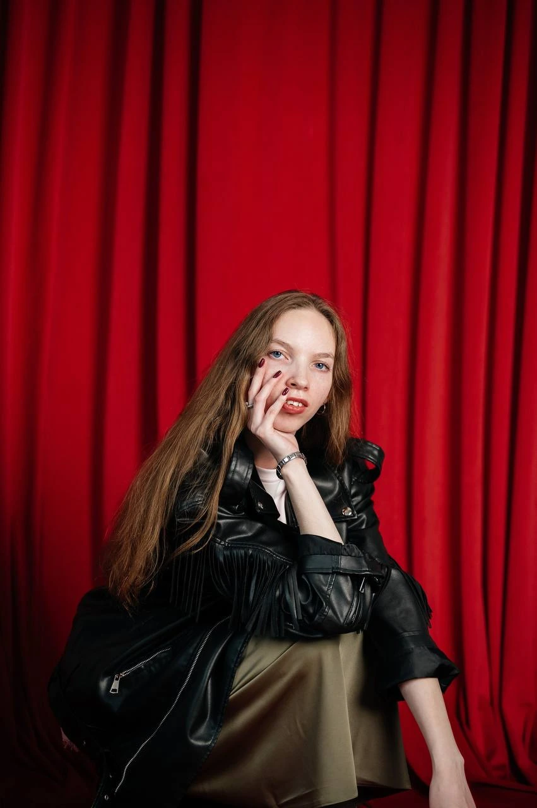
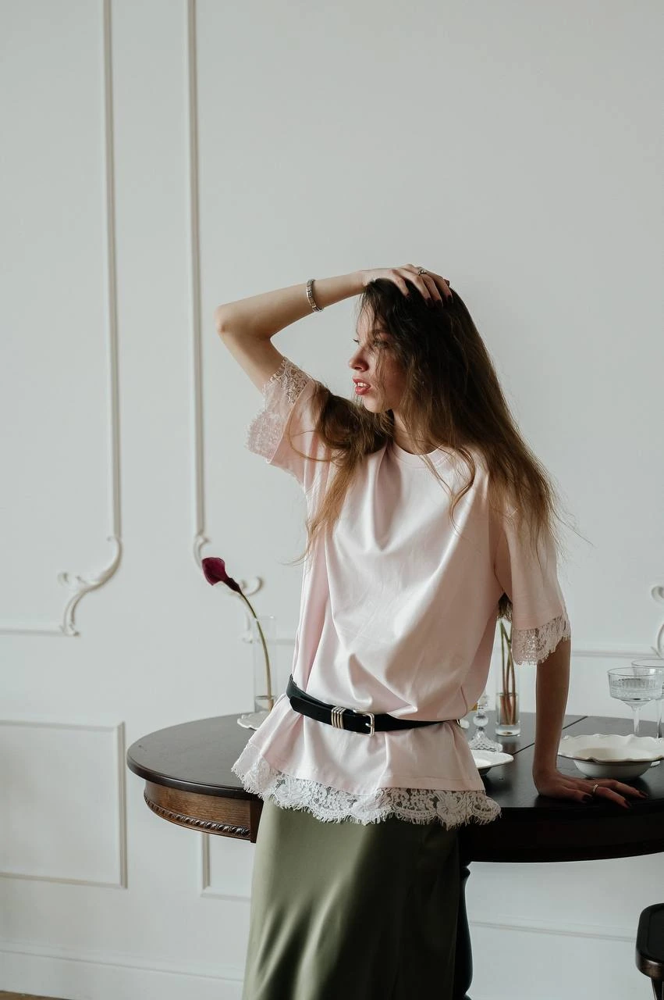
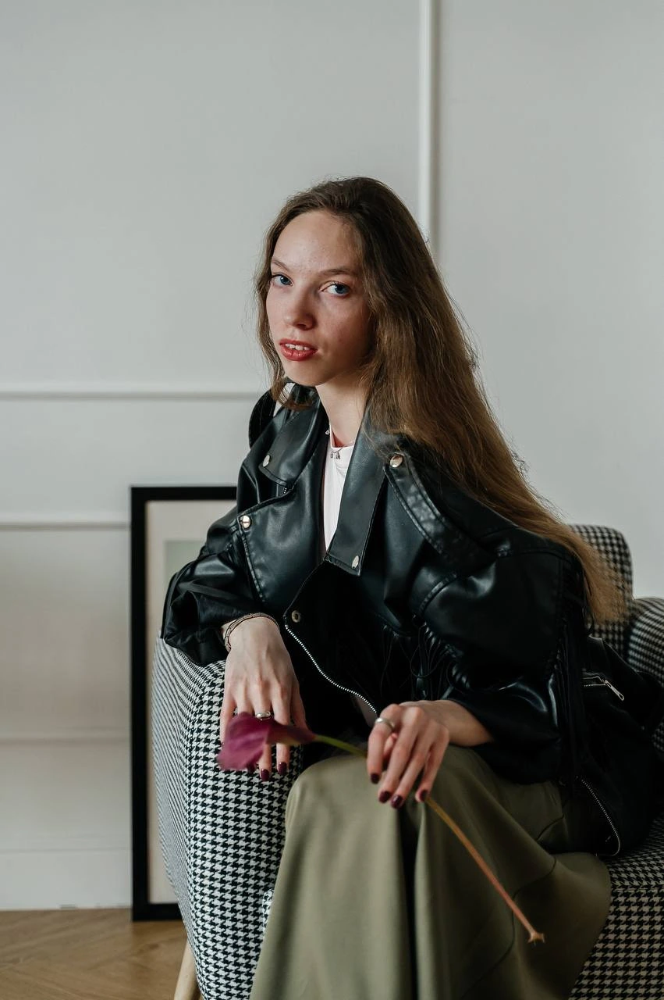

01
На каждый день
РАЗБОР ГАРДЕРОБА

ИНДИВИДУАЛЬНЫЙ ПОДХОД
Помогаю превратить гардероб в систему, где каждая вещь работает на ваш образ.
Без шаблонов: учитываю ваш образ жизни, цели и индивидуальность. Создаю новые сочетания и помогаю покупать осознанно.

Ваш гардероб — это ваш инструмент. Я помогу вам сделать его эффективным.
— ТАТЬЯНАРАЗБОР ГАРДЕРОБА
Образы, собранные при разборе гардероба.
РАЗБОР ГАРДЕРОБА
РАЗБОР ГАРДЕРОБА
РАЗБОР ГАРДЕРОБА
РАЗБОР ГАРДЕРОБА
РАЗБОР ГАРДЕРОБА
РАЗБОР ГАРДЕРОБА
РАЗБОР ГАРДЕРОБА
МОЙ ПОДХОД
Моя цель — дать вам навык легко собирать комплекты и чувствовать уверенность.
Ваш стиль, цели и направление работы.
Вещи, которые подходят именно вам.
Новые сочетания из того, что уже есть.
Комплект для вашего особенного случая.
«Я поняла как из простых вещей составлять классные образы»
«Теперь у меня есть новые неочевидные образы, подобранные вами»
«Несмотря на то, что я и так постоянно расхламляюсь все равно нашлось, что выкинуть!!!»
«все понравилось, работа была комфортной и относительно быстрой, немного почистили+подобрали новые сочетания, я довольна 😊»

ПЕРСОНАЛЬНЫЙ СТИЛИСТ
Выпускница профильной школы стиля Ecole.
Профессиональный подход к цвету, пропорциям и актуальным трендам. Начинаю с того, что уже есть в вашем гардеробе, и помогаю раскрыть его возможности.
Связаться со мной06 / КОНТАКТЫ
Напишите мне в Инстаграме — обсудим вашу задачу и подходящую услугу.